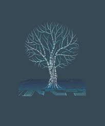

|  |
Allysia BrownWeb Developer and Student Current student, learning and applying web development everyday. I have a high level of enthusiasm for any endeavor I take on. Solving problems and developing skills is a continual process and I am here for it. Communication is extremely important in every aspect of life. Just like the code of a computer can understand certain languages, each human has their own way of viewing and communicating with the world. It is our job to communicate to understand. I am driven independently but I also believe that teamwork is important and enjoyable. Just like a machine, each part contributes to the bigger picture. Also, I love coffee and make my own kimchi. |
| Dietitian | 🔥🔥🔥🔥🔥 | Plumbing | 🔥🔥🔥🔥 |
| Web Developing | 🔥🔥 | Personal Training | 🔥🔥🔥 |